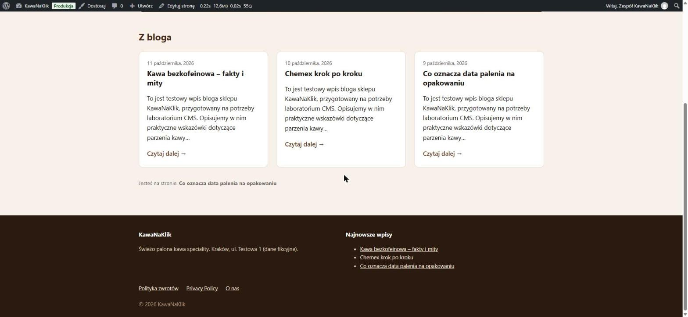
| Przedmiot | CMS – WordPress |
|---|---|
| Zespół (2 os.) | 1. …………………………… 2. …………………………… |
| Repozytorium | github.com/Mateuszl28/KawaNaKlik (folder LAB02/CMS, tag lab1) |
| Środowisko | Local 10.2 · WordPress 7.1.3 · PHP 8.2.29 · MySQL 8.4 · nginx · Query Monitor 4.0.7 · WooCommerce 11.2.1 |
| Data | 21.10.2026 |
| Zadanie | Realizacja | Status |
|---|---|---|
Środowisko z WP_DEBUG, Query Monitor, repozytorium z poprawnym .gitignore | Strona kawanaklik.local w Local. W wp-config.php włączone WP_DEBUG, WP_DEBUG_LOG, WP_DEBUG_DISPLAY, SCRIPT_DEBUG. Query Monitor zainstalowany przez WP-CLI. Plik .gitignore przygotowany dla repozytorium = wp-content (rozdz. 2). | ✓ |
Motyw aktywny, ze screenshot.png, menu głównym, menu w stopce i obszarem widgetów | Motyw kawanaklik jest włączony. Ma miniaturę 1200×900, dwie lokalizacje menu (primary, footer) i obszar widgetów „Stopka” z dwoma widgetami (rys. 1–3). | ✓ |
Strona główna wyświetla 3 ostatnie wpisy przez własne WP_Query | front-page.php: główna pętla wyświetla stronę „Strona główna” (hero), a dodatkowe WP_Query pobiera 3 ostatnie wpisy (rys. 4). | ✓ |
Szablony single.php, page.php, 404.php działają, brak ostrzeżeń PHP | Sprawdzone dla 7 typów adresów: strona główna, blog, wpis, strona, kategoria, wyszukiwanie, 404. Plik debug.log jest pusty, Query Monitor nie pokazuje błędów PHP. | ✓ |
| Wireframe 4 widoków sklepu | Strona główna, kategoria, karta produktu, koszyk. Pola edytowane przez klienta (przyszłe ACF) są oznaczone (rozdz. 5). | ✓ |
Commit i tag lab1 | Commit w repozytorium zespołu, tag lab1. | ✓ |
Treści testowe dodaliśmy przez WP-CLI. Wpisy z wp post generate mają pusty tytuł, treść i autora, więc nadaliśmy im tytuły, kategorie (Poradniki, Nowości, Z palarni), treść, autora i różne daty publikacji. Bez różnych dat kolejność „3 ostatnich” była przypadkowa.
wp config set WP_DEBUG true --raw wp config set WP_DEBUG_LOG true --raw wp config set WP_DEBUG_DISPLAY true --raw wp plugin install query-monitor --activate wp theme activate kawanaklik wp post generate --count=10 wp option update show_on_front page # statyczna strona główna wp menu location assign menu-glowne primary wp menu location assign menu-w-stopce footer
Repozytorium zespołu = katalog wp-content. Każda osoba klonuje je do wp-content swojej strony w Local. .gitignore działa jak „biała lista”: wszystko jest domyślnie ignorowane, a do repozytorium trafia tylko nasz motyw i przyszłe własne wtyczki z prefiksem kawanaklik-. Nie wersjonujemy rdzenia WordPressa, wtyczek z katalogu, mediów (uploads/), cache ani logów.
/* !.gitignore !/themes/ /themes/* !/themes/kawanaklik/ !/plugins/ /plugins/* !/plugins/kawanaklik-*/ /uploads/ debug.log
kawanaklik/ ├── style.css # nagłówek motywu („dowód osobisty”) ├── functions.php # tylko dołącza pliki z inc/ ├── index.php # szablon awaryjny (blog, archiwa, wyszukiwanie, WooCommerce) ├── header.php, footer.php # wp_head(), wp_body_open(), wp_footer() ├── front-page.php # strona główna + WP_Query (3 wpisy) ├── single.php # pełna treść, data, autor, kategorie, nawigacja ├── page.php # strona statyczna ├── 404.php # komunikat + get_search_form() ├── screenshot.png # 1200×900 ├── inc/ setup.php · assets.php · widgets.php · filters.php · template-tags.php ├── template-parts/content.php # karta wpisu └── assets/ css/main.css · js/main.js (menu mobilne)
Wszystkie funkcje mają prefiks kawanaklik_, a każdy plik PHP zaczyna się od blokady if ( ! defined( 'ABSPATH' ) ) exit;. Dane wyjściowe są escapowane (esc_html, esc_url, esc_attr).
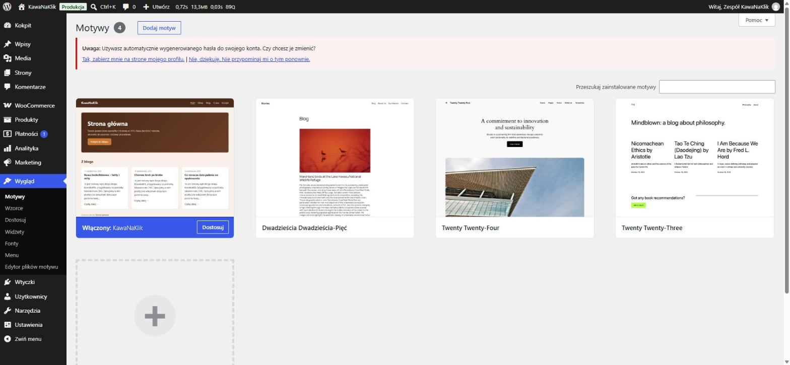
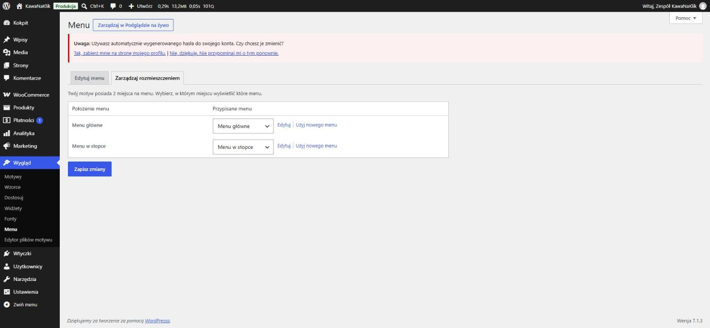
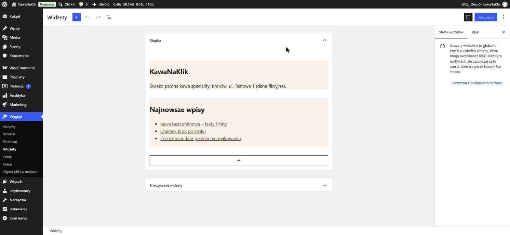
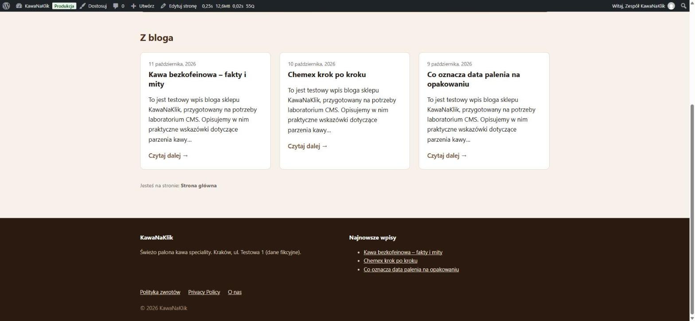
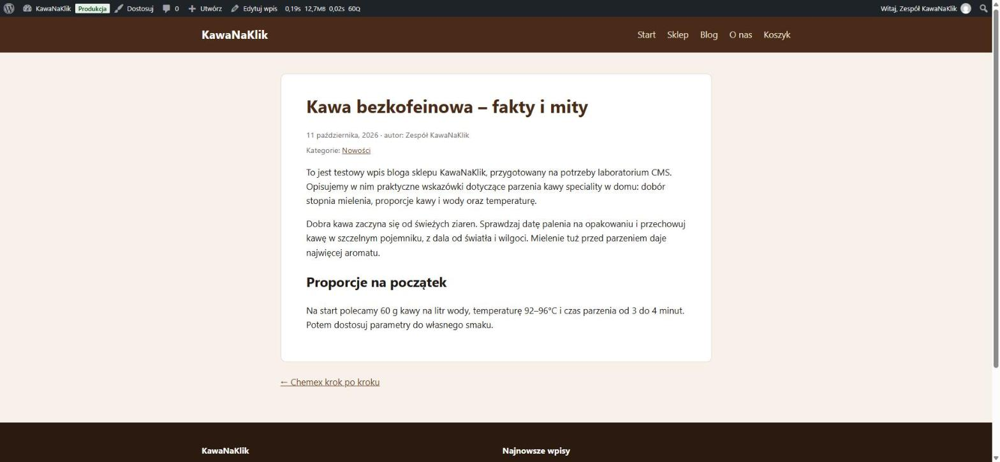
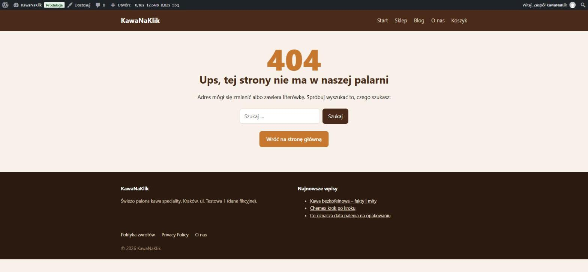
Query Monitor (zakładka Template) pokazuje, który plik został użyty (Template File) i jakie pliki WordPress próbował znaleźć po kolei (Template Hierarchy). WordPress przechodzi listę od góry i bierze pierwszy plik, który istnieje w motywie.
| Adres | Hierarchia sprawdzona przez WP | Użyty plik | Dlaczego |
|---|---|---|---|
Strona główna / | front-page.php → page-strona-glowna.php → page-60.php → page.php → singular.php → index.php | front-page.php | Strona główna ma ustawioną stałą stronę („Strona główna”, ID 60). front-page.php jest pierwszy w hierarchii i istnieje. |
Wpis /?p=50 | single-post-post-2.php → single-post.php → single.php → singular.php → index.php | single.php | Nie mamy szablonów dla konkretnego wpisu (slug) ani dla typu post, więc pierwszym istniejącym plikiem jest single.php. |
Strona /o-nas/ | page-o-nas.php → page-62.php → page.php → singular.php → index.php | page.php | Brak szablonu dla sluga i ID tej strony, więc użyty jest ogólny page.php. |
Nieistniejący /nie-istnieje-xyz/ | 404.php → index.php | 404.php | Zapytanie nie znalazło treści (is_404()), więc hierarchia ma tylko 404.php i index.php. Plik 404.php istnieje. |
Blog /blog/ | home.php → index.php | index.php | Strona wpisów to widok is_home(). Nie mamy home.php, więc WordPress używa szablonu awaryjnego. |
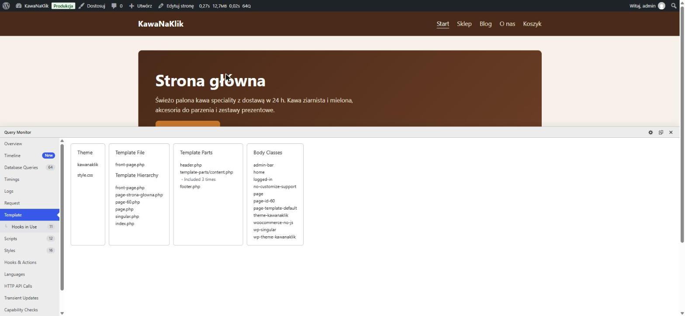
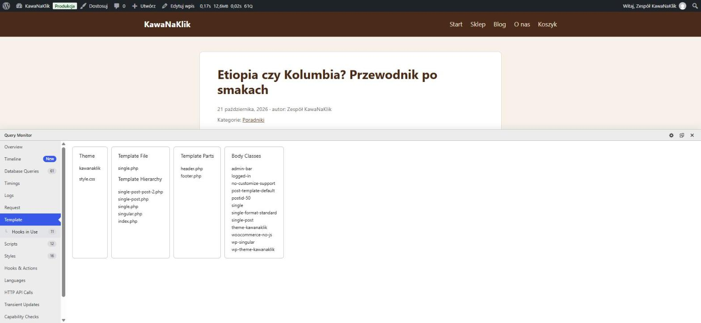
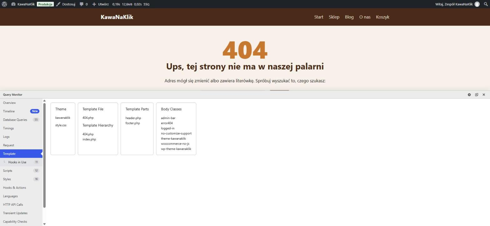
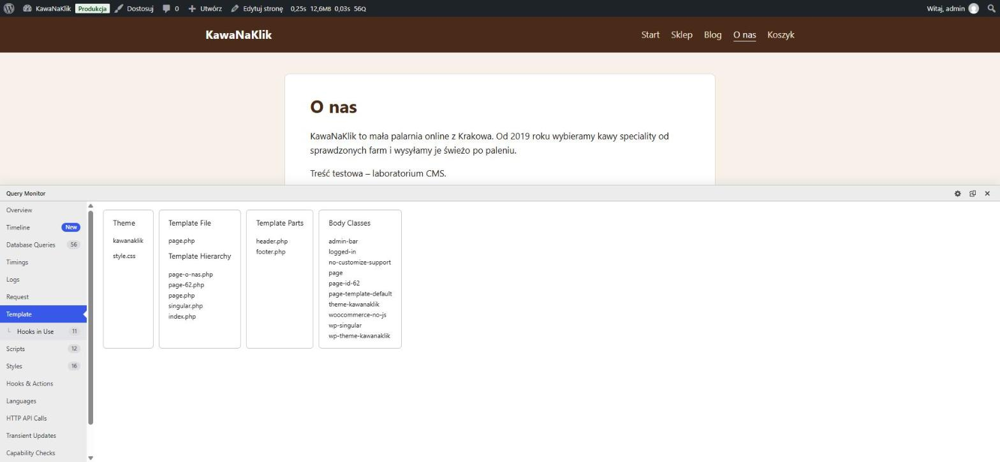
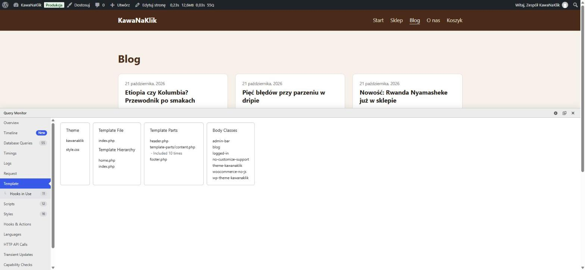
Akcja (add_action) oznacza: „zrób coś w tym momencie”. Funkcja wykonuje operację (rejestruje, wypisuje, dołącza plik) i nic nie zwraca. Filtr (add_filter) oznacza: „dostajesz wartość, zmień ją i oddaj”. Funkcja musi zwrócić wartość, bo inaczej WordPress dostanie null i np. zajawka zniknie.
// inc/assets.php – AKCJA
function kawanaklik_assets(): void {
$ver = wp_get_theme()->get( 'Version' );
wp_enqueue_style( 'kawanaklik-main',
get_theme_file_uri( 'assets/css/main.css' ),
array(), $ver );
wp_enqueue_script( 'kawanaklik-main',
get_theme_file_uri( 'assets/js/main.js' ),
array(), $ver, array( 'strategy' => 'defer' ) );
}
add_action( 'wp_enqueue_scripts', 'kawanaklik_assets' );
// inc/filters.php – FILTR
function kawanaklik_excerpt_length( int $length ): int {
return 20; // zamiast domyślnych 55 słów
}
add_filter( 'excerpt_length', 'kawanaklik_excerpt_length' );
function kawanaklik_excerpt_more( string $more ): string {
return '…'; // zamiast „[…]”
}
add_filter( 'excerpt_more', 'kawanaklik_excerpt_more' );
Inne akcje w motywie: after_setup_theme (wsparcie funkcji i menu w inc/setup.php) i widgets_init (obszar „Stopka” w inc/widgets.php). Efekt filtra widać na rys. 4: zajawki mają 20 słów i kończą się wielokropkiem.
wp_head() lub wp_footer()?Sprawdziliśmy to na kopii motywu na stronie: kolejno zakomentowaliśmy każde wywołanie, a potem przywróciliśmy oryginał.
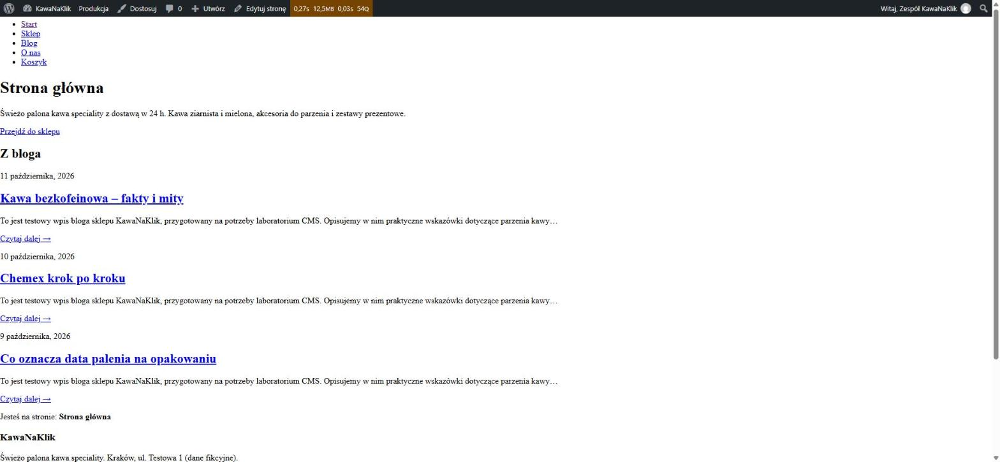
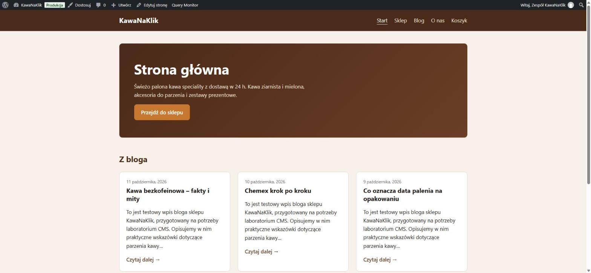
Bez wp_head():
<head>. Nie ładuje się main.css, więc strona wraca do surowego HTML. Element <title> jest pusty, bo title-tag generuje go właśnie w wp_head.main.css = brak, document.title = "".Bez wp_footer():
defer są w <head>. Nie ładują się jednak skrypty kolejkowane do stopki. Liczba skryptów na stronie spadła z 22 do 10.admin-bar.js i hoverintent (obsługa pasków admina), emoji, skrypty WooCommerce sourcebuster i order-attribution oraz cały Query Monitor. W pasku widać tylko napis „Query Monitor” bez statystyk, a panelu nie da się otworzyć.wp_body_open(), więc nie znika całkowicie. Traci jednak skrypty, a wtyczki zależne od stopki (formularze, statystyki, koszyk WooCommerce) mogą przestać działać.Wniosek: oba wywołania są obowiązkowe. To punkty zaczepienia, przez które rdzeń i każda wtyczka dokładają swoje zasoby do strony.
wp_reset_postdata()? Co się dzieje bez tego wywołania?Metoda the_post() własnego WP_Query nadpisuje globalną zmienną $post i dane bieżącego wpisu. Po pętli $post wskazuje więc na ostatni wpis z pętli, a nie na stronę, którą wyświetlamy. wp_reset_postdata() przywraca $post z głównego zapytania. Dzięki temu funkcje wywołane później (the_title(), get_the_ID(), warunki, pola ACF, widgety) dotyczą właściwej strony.
W front-page.php pod listą wpisów wyświetlamy dopisek get_the_title():
wp_reset_postdata(): „Jesteś na stronie: Strona główna” – poprawnie,wp_reset_postdata(): „Jesteś na stronie: Co oznacza data palenia na opakowaniu”, czyli tytuł trzeciego, ostatniego wpisu z pętli.Na zajęciach z ACF taki błąd oznaczałby, że get_field() czyta pola niewłaściwego wpisu.

| Problem | Rozwiązanie |
|---|---|
Przy WP_DEBUG na każdej stronie pojawiał się Notice z rdzenia: styl block-style-variation-styles zależy od niezarejestrowanego global-styles. | Okazało się, że niezalogowani goście widzieli blokową stronę „Wkrótce” WooCommerce, a nie nasz motyw. Notice pochodził z tego szablonu blokowego. Po wyłączeniu trybu „Wkrótce” (woocommerce_coming_soon = no) debug.log jest pusty. |
comments_template() w single.php bez pliku comments.php wywołuje przy WP_DEBUG ostrzeżenie o przestarzałym pliku zastępczym. | Usunęliśmy wywołanie z tego laboratorium. Komentarze dodamy razem z własnym comments.php. |
Wpisy z wp post generate nie miały treści ani autora („autor:” był pusty) i miały identyczną datę. | Uzupełniliśmy treść, autora i różne daty przez WP-CLI. Zajawki i kolejność „3 ostatnich” są teraz poprawne. |
Wireframe'y lo-fi (pliki SVG/PNG w wireframes/, generowane skryptem wireframes.py). Szare bloki to treść generowana automatycznie (WordPress/WooCommerce). Pomarańczowa przerywana ramka z etykietą „ACF” to element, który będzie edytował klient – pola ACF na zajęciach 2.
| Widok | Elementy edytowane przez klienta (ACF) |
|---|---|
| Strona główna | Hero: nagłówek, opis, tekst i link przycisku, obraz tła · 4 korzyści (ikona, tytuł, opis) · wybór bestsellerów (pole relacji do produktów) · opinie klientów (CPT + pola). Ostatnie wpisy z bloga są automatyczne (WP_Query). |
| Kategoria produktów | Baner i opis kategorii · tekst SEO pod listą produktów |
| Karta produktu | Nuty smakowe · parametry kawy (data palenia, kraj, wysokość upraw, odmiana) |
| Koszyk | Próg i komunikat darmowej dostawy |
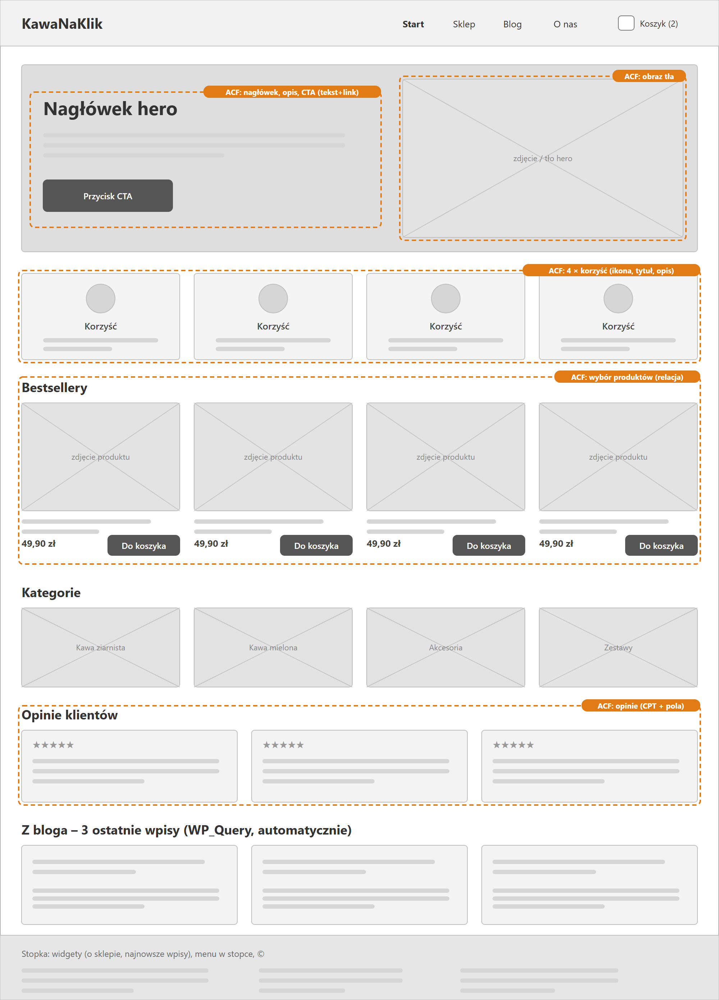
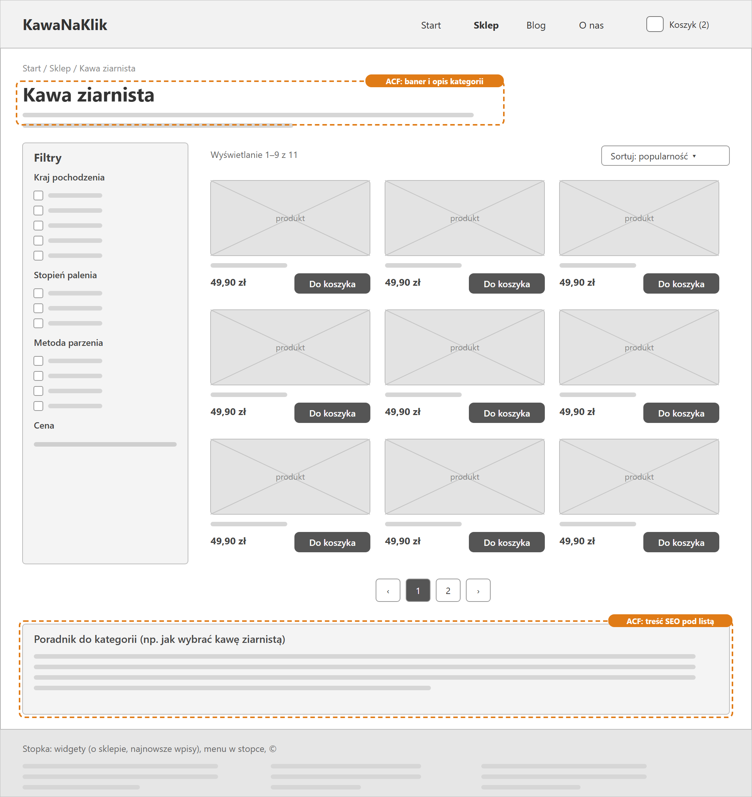
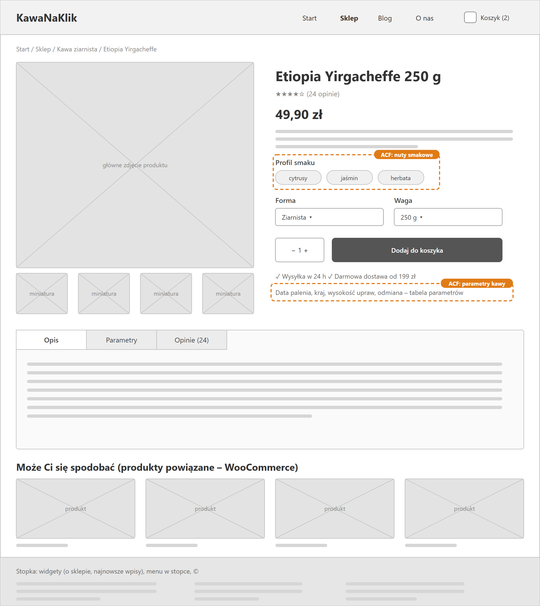
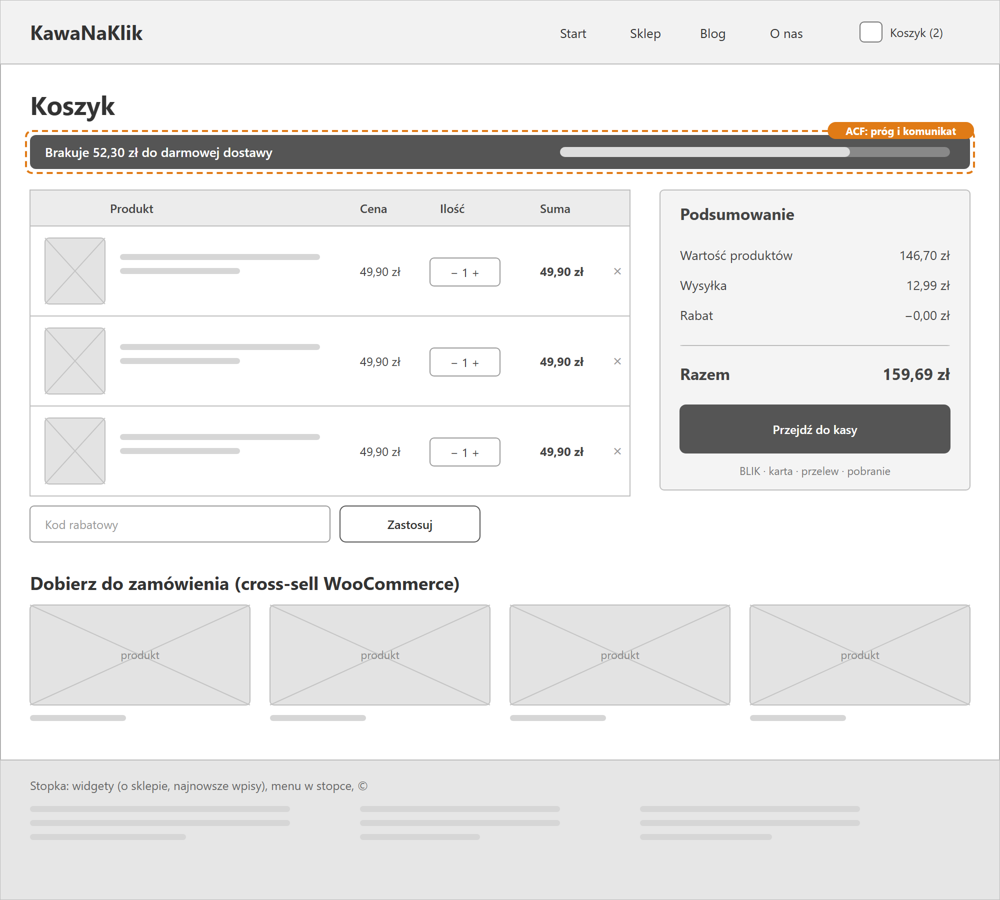
index.php i dodawać bardziej szczegółowe pliki tylko tam, gdzie widok ma wyglądać inaczej. Query Monitor pokazuje dokładnie, który plik wygrał.wp_head(), wp_body_open() i wp_footer() to obowiązkowe „gniazda” dla cudzego kodu.WP_Query trzeba zamknąć wp_reset_postdata(). Inaczej dalsza część szablonu działa na niewłaściwym wpisie.